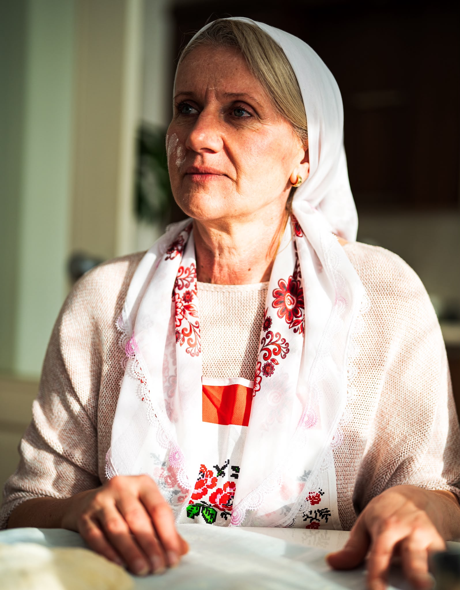
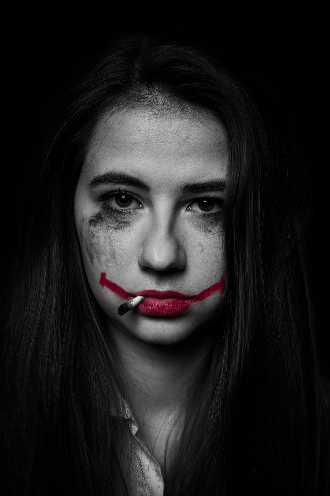
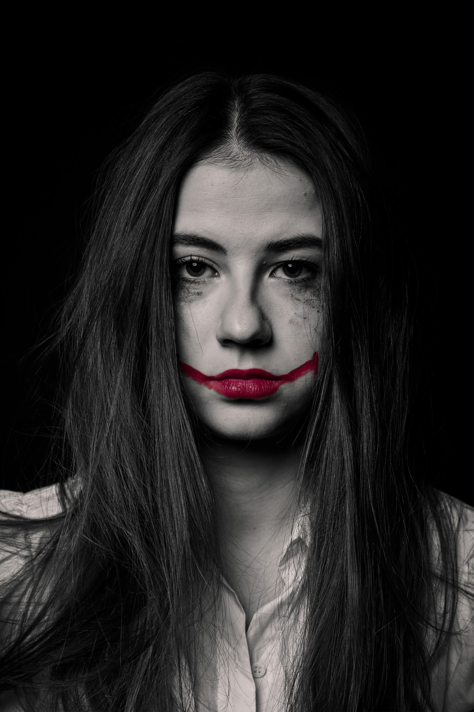
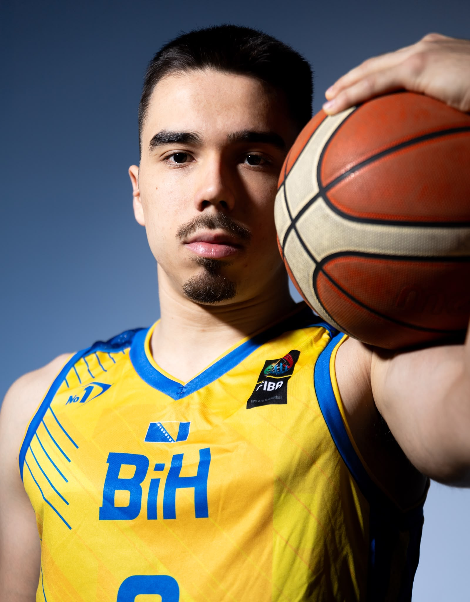
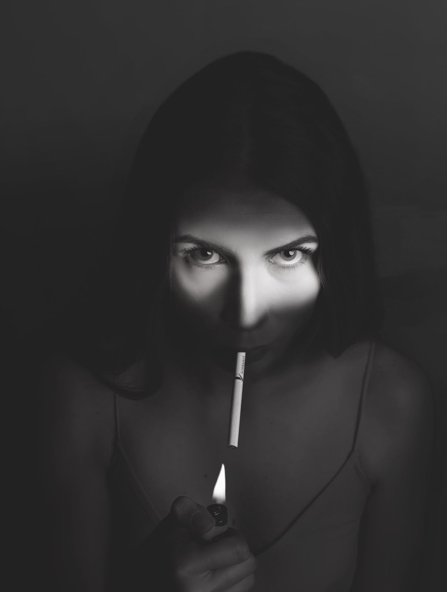

PhotographyFotografija
Portrait PhotographyPortretna fotografija
A collection of photographs capturing people, everyday moments, and different atmospheres. Each image tells its own story through composition, lighting, and attention to detail, reflecting the character of the subject and the moment captured. Kolekcija fotografija koje prikazuju ljude, svakodnevne trenutke i različite atmosfere. Svaka fotografija priča svoju priču kroz kompoziciju, osvjetljenje i pažnju posvećenu detaljima, dočaravajući karakter osobe i trenutka koji je zabilježen.





